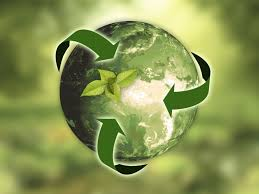

Our Ongoing Projects

Project Vidya
Providing basic education kits, mentoring programs, and digital literacy classes to underprivileged children across communities.

EcoAmigos Drive
Combating climate change through structured tree-plantation drives, plastic-free awareness events, and waste management campaigns.

Project Poshan
Addressing nutritional deficiencies by organizing structured food distribution systems and health awareness check-up camps.